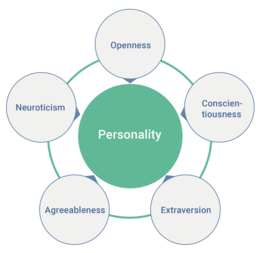

Terms
culture---all of the socially transmitted beliefs and behavior patterns in a group or society.
In psychology, personality refers to consistencies in a person's behavior across various situations and over time---the ways in which a person generally tends to respond.
Emotions
Virtually all emotions are fundamentally about physical safety and well-being or social safety and well-being. Emotions almost always arise in response to things that happen---or might happen---in our physical environment or our social environment.
-
Emotions notify us about important events
-
Emotions force us to focus on events until we take action
-
Emotions motivate people to behave in ways that deal with events.
-
Emotions produce changes in the body, which are designed to prepare us to respond to whatever caused the emotion.
We should be aware of the degree to which we unnecessarily inflict undesired emotions on ourselves just by thinking and imagining.
Interoception includes all the signals from your internal organs, including your cardiovascular system, your lungs, your gut, your bladder and your kidneys.
Emotional events begin with non-conscious changes in bodily states, called "somatic markers": when you see an angry dog, for instance, and your muscles tense or your heart begins to race. This physiological reaction occurs before you are even aware of the emotion, and it is only when the brain detects the alteration to the body's internal state, through interoception, that we actually experience the feeling and allow it to shape our behaviour. Without the back-and-forth between the brain and the body, the feelings of happiness, sadness or excitement wouldn't exist.
In the early 1960s, psychologist Stanley Schachter explored the notion that some of the time what your brain is doing is not so much having emotion caused by what's going on in your body, but if you are having a strong bodily response, your brain looks at the world around you for emotionally relevant environmental cues that it can attribute your bodily state to.
Why someone might lash out after a fight:
When the fight should be over, your heart is still racing and you still feel angry, so your brain searches for an attribution, so it resorts to the awful thing the person did in the past.
A final disturbing piece of this scenario is that there appears to be a gender difference. On average, men turn on the sympathetic nervous system more rapidly than women do, and on average, women keep it turned on for longer than men do, resulting in a longer recovery time after the end of a fight.
The next time you have one of those fights, get everyone to take a deep breath and have everyone sit down after it's over, in order to help turn off the sympathetic nervous system.
Happiness
Causes of happiness can be classified into three major categories:
-
life circumstances (10% attribution to happiness level)
-
However, that's what most of us focus on and try to change to make us happier. Your life circumstances might make you happy, but perhaps they don't make you as happy as you think they do---or for as long as you might imagine.
-
Genetics (50%)
-
behavior. (40%)
-
living one's life in a way that focuses on things that are intrinsically important for human well-being
Stress
Most of the things that create chronic stress in our everyday lives are the recent developments of civilization and culture, including traffic jams, computer crashes, constant noise, air travel, and stock market declines.
People are far more chronically stressed out than other animals because we live in an environment that is drastically different from the environment in which our brains evolved.
We live with a lot of uncertainty regarding whether life is going well. Animals live in an environment, in which they can see the consequences of their behavior on an ongoing basis. It gets immediate feedback regarding whether it is accomplishing essential life tasks. Much of the stress of modern life comes from the fact that we live in a profoundly delayed-return environment. If you have a job or are going to school, not much of what you do each day provides for your needs on that day; instead, you probably spend much of your time each day thinking about, planning for, working toward, and worrying about your future goals.
When the things that create stress lie in the future, as they often do for us, the threat is in our mind rather than immediately present.
In a world in which the stress response is not about running for your life in a short-term physical crisis; instead, it's about what some people perceive to be stressful versus what others perceive not to be stressful.
The cornerstone of the whole field of stress physiology is built around the notion that this stress response evolved in our bodies for dealing with short-term physical crises, and then we turn them on for chronic psychological stress. Because the system didn't evolve from being chronically activated, there are issues with this system.
If you are running away from a lion and your blood pressure is increased, that saves your life, but increase your blood pressure chronically and you're more at risk for cardiovascular disease. You're more at risk for metabolic disorders if you're constantly mobilizing energy; if you're constantly shutting down growth, your immune system eventually will shut down.
While people with anxiety disorders perceive stressors around them that other people don't, people with depression believe they are helpless under circumstances where they could actually cope effectively. People with both disorders tend to secrete excessive levels of damaging stress hormones. It turns out that there is also an overactive stress response in people with neither of the diseases who are functional and successful but who have repressive personalities, teaching us that it can be enormously stressful to create a world in which nothing stressful ever occurs.
In the absence of a stressor, the ideal profi le for stress response includes low resting heart rate, blood pressure level, and stress hormones. When a psychological stressor enters the scene, it would be ideal for your levels to remain as if there were no stressor.
When you are presented with a real physical stressor, you should have a massive stress response that increases levels as quickly and as high as possible, and the second it's over, you want to recover as quickly as possible.
There are domains in which we love loss of control and loss of predictability; for example, we will pay good money for this loss when riding on a rollercoaster or when listening to a comedian. The difference is when loss of control or predictability is in a setting that we view as benevolent, we like it, and we're willing to relinquish it in order to be surprised.
Hurt feelings
Are caused by rejections and originate from our need to be part of a social group. Hurt feelings can sometimes be treated with the same medications than physical pain.
Overreaction
When people are overreacting, they often seem to be in an altered state of consciousness. They have lost touch with the situation that they're in, and they don't seem to have control over their own behavior.
What seems to happen is that the person becomes narrowly focused on what he or she wants to happen, and the person becomes so fixated on having this one desire fulfilled that other relevant considerations---such as social norms, moral standards, other people's feelings, or long-term consequences of their reaction--- are ignored.
Overreacting takes energy, hurts other people's feelings, damages relationships, and can even result in legal problems---but people overreact anyway. It's irrational because it brings about more costs than rewards for the person who has overreacted.
Feelings of being mistreated or disrespect can cause overreaction. People may respond to cases of inconsequential disrespect or unfairness to deter more serious infractions later, and the stronger the person responds, the more effective it will be in showing others that the person will not be taken advantage of.
A tendency to respond strongly in situations was probably favoured by natural selection. It's possible that human beings carry this evolved tendency to address possible problems in the moment, which makes us overreact to rather minor signs that other people are not treating us as we would like.
When people overreact, they are often engaging in a catastrophizing thinking process, in which they have an exaggerated view of the likelihood that something bad is going to happen or an exaggerated belief about how bad the bad thing is.
Self-control
Problems with self-control almost always involve a conflict between two competing goals or motives.
Abstract rewards are not as compelling as concrete rewards, and consequences that we will receive in the future seem worth less to us than immediate consequences. Unfortunately, the goal that we are often working for---to lose weight or to be healthy, for example---is both more abstract and more distant than the goal to enjoy tempting behaviors in the moment.
People must do extra work in their own mind to make the important, abstract, distant goal more immediate and specific so that it can compete successfully with the specific and immediate temptation.
Subliminal messages
Research suggests that subliminal stimuli are processed at a pretty deep level; that is, even though participants don't consciously see pictures, their brains can extract the identity of a person in a picture and even the nature of his or her expression. In addition, subliminal photographs can affect not only our emotions in general, but also how we evaluate ourselves.
Subliminal effects are real, but they are probably not strong enough to influence people's evaluations of things that they already have strong attitudes about---such as real products or politicians.
Dreaming
Most of why we dream remains a mystery.
In a normal night's sleep, we cycle through the various stages of sleep several times---usually between four and six times---and each of these cycles includes one stage of rapid eye movement (REM) sleep, or dreaming sleep. Therefore, on an average night, each of us dreams on four to six separate occasions. With each new cycle of sleep stages, the time that we spend in REM becomes increasingly longer. During an average night we spend about a quarter of our sleeping time dreaming (REM sleep).
REM sleep is experienced in both mammals and birds and appears to be very important. Animals that are deprived of it may eventually die. The actual dreams we experience might be a just a by-product and do not fulfil any specific function.
During normal days, the frontal cortex is reigning in the limbic system's emotionality. During dreams, the frontal cortex's metabolic rate decreases drastically, and the limbic system goes out of control at that point because the part of the brain that imposes linear, rational regulation of your emotional brain goes offl ine when you enter the REM stage.
Self-esteem
Self-esteem refers to how positively people feel about themselves. It is not the same as self-confidence , which is the belief that you can do certain things or bring about certain outcomes. Self-esteem is not a belief; it's a feeling or evaluation that people have about themselves.
Almost all psychological problems are more common among people with lower self-esteem, it's not the self-esteem that causes the problems, but self-esteem is just an outcome. E.g. the life events that cause depression also tend to lower self-esteem. Behaving in positive and negative ways leads to changes in self-esteem.
Most people have moderate or high self-esteem.
Self-esteem as socio-meter (gauge)
State self-esteem is the in the moment level of self-esteem that changes throughout the day. Trait self-esteem is our base level self-esteem (in the absence of feedback) based on historical acceptances and rejections.
The sociometer monitors the social situation and our behavior and gives us information about our social acceptability (acceptance and rejection). This information comes in the form of good or bad feelings about ourselves which in turn affects our self-esteem.
Nature vs. nurture (situation, environment)
Many instances of modern-day behaviours are manifestations of strategies that facilitated survival and reproduction during evolutionary history.
Evolution doesn't only affect biology but also behaviour. People are mainly driven by 5 motives:
-
need for social acceptance
-
desire to belong to groups
-
need to influence other people
-
tendency to protect ourselves against people who might harm us
-
strong inclination to establish intimate relationships.
More than 99 percent of all person's genes are identical. We share about 98 percent of our genes with chimpanzees. The less than one percent of genes that are different from other people are the genes that make each of us look and act differently (while \<1% is relatively low it's absolutely a huge number of genes).
What's being inherited is not a personality trait but, rather, the genes that influence your nervous system to respond in particular ways. Several traits are only displayed by a particular combination of many genes together.
Research shows that shared experiences that are common to all children in a family affect their personalities far less than the critical childhood experiences that involve the unique experiences that children have.
Genes can also have indirect effects on personality by creating changes in people's environments. One initial genetic difference in a child's activity level or irritability can start a sequence of behaviors and events that cascade for the rest of their life, building on each other over time.
Most of the knowledge gained on whether certain characteristics are due to nature or nurture are based on studies with twins. If identical twins who were raised by different families have similar personalities, then those similarities are probably because they have the same genes.
Extroversion and neuroticism (getting upset easily, focus on negativity, not calm) are the two most important personality traits because as we look at differences among people, this traits relate more strongly to their behaviors than any other personality traits.
Big five personality traits (OCEAN)

Prejudice
-
Prejudice usually starts from a feeling of us vs. them.
-
we can change the way people categorize themselves from "us" versus > "them" to "we." Studies have shown that once the members of two > old groups started reconceptualizing themselves as members of the > same group, prejudice and conflict declined.
-
When groups compete for resources prejudice increases.
-
Research shows that groups of people are less cooperative and more competitive than individuals are.
-
Individuals have more prejudice towards another group than with individuals of that group
-
We tend to think that members of other groups are more similar to each other than they really are. Therefore, we generalize behaviour across the whole group.
-
When members of a group think that their situation is worse in comparison to other groups, they experience dissatisfaction and frustration, are more likely to derogate members of other groups, and are more likely to behave aggressively
-
Prejudice and discrimination are also fed by the perception that another group doesn't share the values, attitudes, and moral standards of one's own group.
Reward system
Humans are capable of astonishing displays of gratification postponement. This capacity for gratification postponement has a lot to do with a neurotransmitter called dopamine. Scientists originally thought dopamine was about pleasure and reward, but it is actually more about the anticipation of reward than about reward itself. Even more so, it's about the work needed to achieve that reward; dopamine is the pursuit of pleasure, not pleasure itself. Nothing gets dopamine going like "maybe," the possibility rather than the certainty of reward.
Our capacity to postpone reward begins to explain some of the greatest triumphs of human accomplishments, the human realm of phenomenal motivation and of reaching increasingly higher for your achievements.
It also begins to explain some of our most crippled realms of human behavior, including addiction, dissatisfaction, and the neurochemistry of constantly needing something new---this whole neurochemical world where something that was wonderful yesterday is exactly what you receive today but won't be satisfying tomorrow.
The limbic system (responsible for emotions) holds the power of intermittent reinforcement. To understand this power, we must focus again on the frontal cortex, the most decidedly human part of the brain.
An interesting implication is if the frontal cortex is the last part of the brain to develop, it's the part of the brain that is least constrained by genes and most shaped by experience.
Intermittency (unpredictability of receiving a reward like in gambling) intensely fuels dopamine. We have just introduced the word "maybe," which is incredibly motivating.
We humans are reinforced by some very odd things---not just by eating when hungry or other basic instincts. We are reinforced by things that we have invented with culture.
We live in a world in which getting some material item is capable of tapping into the same neurochemical system that has been working in our mammalian ancestors for ages.
The keys to our dopaminergic system are the incredible speed with which the system can habituate and the incredible power the dopamine has to generate behavior---to generate goal-directed work when "maybe" is introduced.
Metaphors and the brain
There is an intermixing between metaphor and the literal in which the brain confuses bodily states with moral ones. Remarkably, people are beginning to understand what's going on in the brain when this occurs: The brain has trouble distinguishing between physical and metaphorical versions of things that happen to use some of the same concepts.
Men vs. women
-
Nine out of 10 prison inmates are men
-
among people who are homeless, men outnumber women by at least three to one
-
men are 10 times more likely to commit murder than women are
-
men are more likely to show up at the low end of distributions of IQ score
-
they are more likely to be mentally retarded---than women
-
men are more likely to abuse and abandon their children and less likely to take care of their aging parents than women.
-
On psychological measures of undesirable characteristics, men outscore women on measures of cruelty, closed-mindedness, hostility, narcissism, and self-indulgence.
-
men die earlier than women---about five years earlier on average.
Why
- There may be some evolutionary and biological processes at play. > These differences between men and women can be seen around the > world, and they don't map easily onto cultural variables.
-
Men show greater variability on many characteristics than women do---more men score at the extremes of distributions than women do (e.g. height and weight)
-
Could be due to the fact that men are more likely to join the military or do more dangerous jobs. For physical and cultural reasons and/or the self-image of men.
The fact that men were more expendable in the mating game helps to explain why men throughout history have focused on seeking recognition through military exploits, politics, exploration, and similar achievements in ways that most women have not. In other words, evolutionary processes bred men to seek attention and take risks.